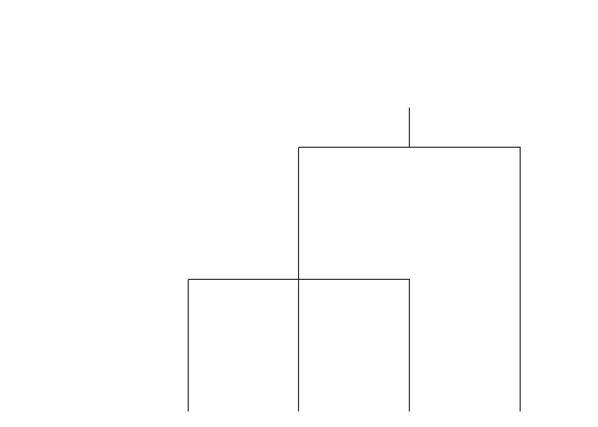
Practical Phylogenetic Methods for Linguistic Typology
This showcase tutorial demonstrates genealogically-sensitive statistical methods for linguistic typology in R, covering the ACL and BM methods for computing phylogenetically-weighted proportions and averages, constructing and manipulating linguistic family trees with glottoTrees, and a complete worked example reproducing a published typological study across 496 languages. It is aimed at researchers in quantitative typology and historical linguistics.

Introduction
A perennial task in typology is the characterisation of frequencies of traits of interest among the world’s languages. The scientific interest of such questions typically lies not merely in the contingent facts of today’s particular languages and language families — rather, the goal is to characterise the nature of human language in general, using today’s empirical data as evidence. One of the key challenges is that languages are historically related to each other. This tutorial is a practical introduction to phylogenetic comparative methods, which meet this challenge in a principled way.
Prerequisite Tutorials
Before working through this tutorial, we recommend familiarity with:
- Getting Started with R — R objects, basic syntax, RStudio orientation
- Loading and Saving Data — reading files into R
No prior knowledge of phylogenetics or evolutionary biology is required. All necessary concepts are introduced as they arise.
Learning Objectives
By the end of this tutorial you will be able to:
- Explain why genealogical relatedness poses a challenge for linguistic typology
- Create, manipulate, and plot linguistic phylogenetic trees in R using the Newick format and the
apepackage - Combine glottolog family trees into composite supertrees using
glottoTrees - Modify trees by adding, removing, cloning, and moving tips and nodes
- Assign realistic branch lengths using exponential and ultrametric scaling
- Calculate genealogically-sensitive proportions and averages using the ACL and BM methods in
phyloWeights - Apply the full workflow to a real typological dataset
Citation
Erich Round and Martin Schweinberger. 2026. Practical Phylogenetic Methods for Linguistic Typology. The Language Technology and Data Analysis Laboratory (LADAL), The University of Queensland, Australia. url: https://ladal.edu.au/tutorials/phylogenetic_methods/phylogenetic_methods.html (Version 3.1.1). doi: 10.5281/zenodo.19332927.
The tutorial is based largely on the Supplementary Materials section S1 of Macklin-Cordes and Round (2021a), and draws substantially on the functionality of glottoTrees (Round 2021a) and phyloWeights (Round 2021b).
Background Reading
This tutorial covers the practical, technical side of phylogenetic methods. For the scientific motivation — why genealogy must be accounted for in typological research and how phylogenetic comparative methods provide the most principled response developed so far — we recommend:
- The LADAL seminar by Macklin-Cordes & Round (Macklin-Cordes and Round 2021b), available at https://youtu.be/yJeQ6AGDLK0
- The companion journal article Macklin-Cordes and Round (2021a)
The text of this tutorial is taken largely from the Supplementary Materials section S1 of Macklin-Cordes and Round (2021a).
An intuitive introduction to the challenge of genealogy
To get an intuitive sense of the challenge posed by genealogical relatedness, consider the small language family below. It contains four languages, which are either SOV or SVO. What proportion of this family is SOV? If you simply count languages, the answer is 75%. But this may feel wrong: one half of the family is counting three times as much as the other half, just because it happens to contain more languages. The figure of 75% is strongly influenced by contingencies of history.
This document provides a practical guide to calculating genealogically-sensitive proportions and averages — methods that answer the question: when characterising the frequencies of traits among the world’s languages, how can we take genealogy into account? We cover two methods: the ACL method (Altschul, Carroll, and Lipman 1989) and the BM method (Stone and Sidow 2007).
The tutorial is divided into four main sections. Section Trees in R introduces how trees are represented and manipulated in R. Section Genealogically-sensitive averages and proportions covers the calculation itself. Section Using and adapting trees from glottolog explains how to prepare phylogenetic trees from freely available resources at glottolog.org. Section Worked example: Yin (2020) provides a complete worked example from a typological investigation of sonority sequencing.
Installation and Setup
Packages Used in This Tutorial
This tutorial requires two GitHub-only packages — glottoTrees and phyloWeights — which are not currently available on CRAN. Both are actively maintained by Erich Round and must be installed via remotes.
Installing packages
Code
# Install remotes if needed
install.packages("remotes")
# Install from GitHub
remotes::install_github("erichround/glottoTrees",
dependencies = TRUE)
remotes::install_github("erichround/phyloWeights",
dependencies = TRUE)
# Install CRAN packages
install.packages(c("ape", "dplyr", "flextable", "checkdown"))
Installation Notes
If the GitHub installation fails, try adding INSTALL_opts = c("--no-multiarch") to the remotes::install_github() calls. On Windows this resolves the most common installation errors:
remotes::install_github("erichround/glottoTrees",
dependencies = TRUE,
INSTALL_opts = c("--no-multiarch"))The packages require an internet connection on first install. Once installed, all glottolog data is bundled locally and no internet connection is needed to run the tutorial.
Loading packages
Code
library(ape)
library(dplyr)
library(flextable)
library(glottoTrees)
library(phyloWeights)
library(checkdown)Trees in R
Section Overview
What you will learn: How trees are created from Newick strings; the phylo and multiPhylo object classes; how to access and plot tree components; and why the left-to-right arrangement of tips in a tree carries no linguistic meaning
This section discusses how trees are created, manipulated and plotted in R. Terminology we will use: tips at the ends of trees (usually individual languages or lects); the branches of a tree; interior nodes where branches join; and the root, the deepest node. R represents trees as phylo objects containing tip labels, node labels, branch lengths, and topology.
Creating trees from Newick strings
The simplest way to construct a tree in R begins with a Newick string — a bracketing notation where tips are grouped by parentheses, separated by commas, and terminated with a semicolon:
Code
my_newick <- "(((A,B),C),D);"
my_tree <- ape::read.tree(text = my_newick)We can plot the tree using R’s plot() function (which by default plots trees horizontally, following biological convention):
Code
plot(my_tree)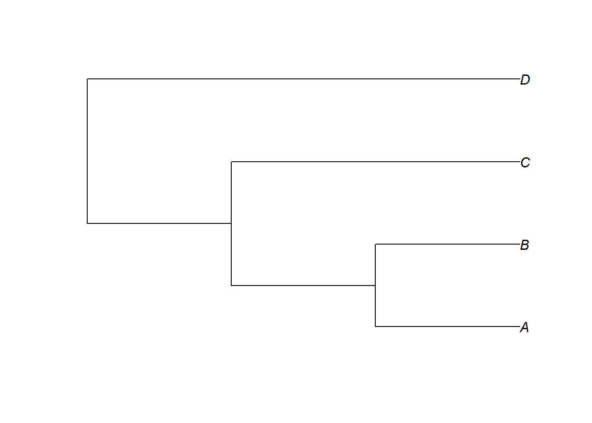
The glottoTrees package provides plot_glotto(), which plots trees in the downward-running format more common in linguistics:
Code
plot_glotto(my_tree)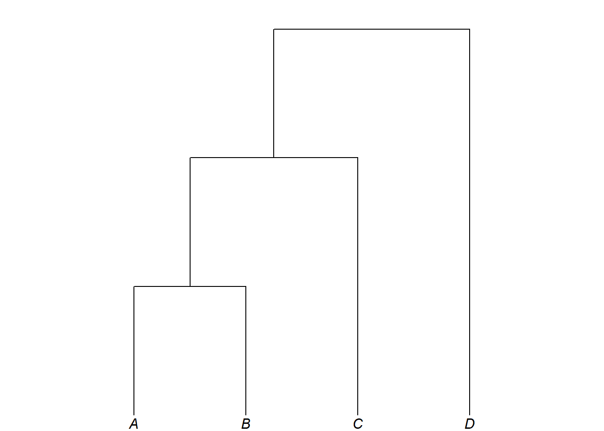
Adding branch lengths
Branch lengths are written in Newick format with a preceding colon directly after a tip label or closing bracket:
Code
my_newick2 <- "(((A:4,B:4):1,C:5):3,D:8);"
my_tree2 <- ape::read.tree(text = my_newick2)Code
plot_glotto(my_tree2)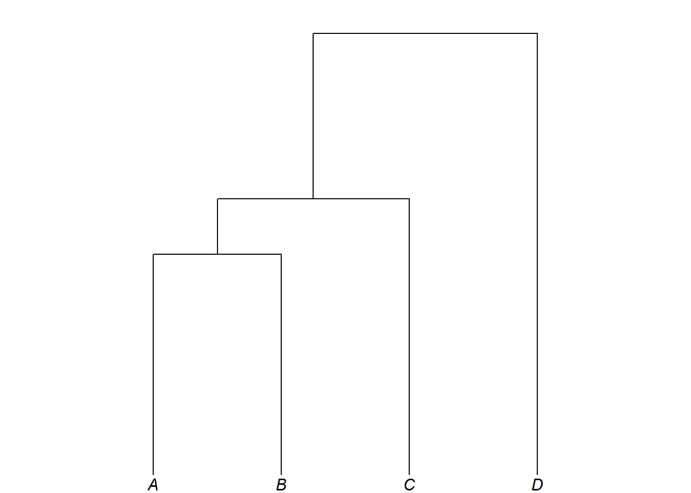
Adding node labels
Internal nodes can be labelled by placing the label directly after a closing parenthesis. In linguistics, node labels may reflect a taxonomic subgroup or a proto-language:
Code
my_newick3 <- "(((A:4,B:4)proto-AB:1,C:5)proto-ABC:3,D:8)proto-ABCD;"
my_tree3 <- ape::read.tree(text = my_newick3)
plot_glotto(my_tree3)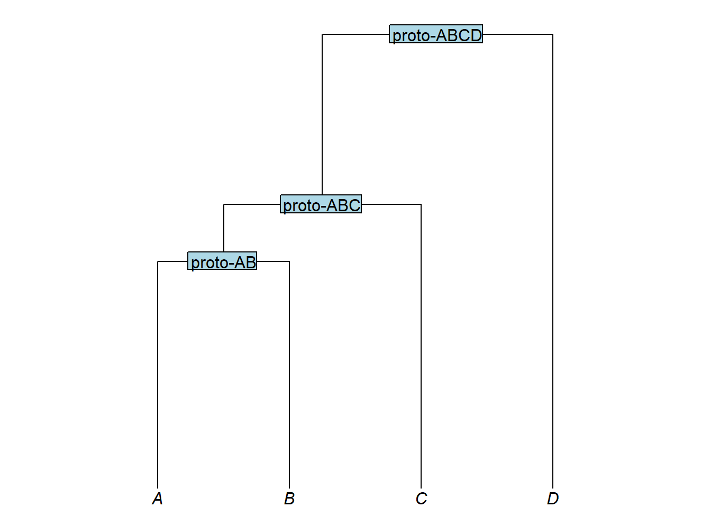
The phylo object
Trees in R are objects of class phylo:
Code
class(my_tree3)[1] "phylo"A phylo object stores the tree topology, branch lengths, and tip and node labels, accessible via $:
Code
my_tree3$edge.length # branch lengths[1] 3 1 4 4 5 8Code
my_tree3$tip.label # tip labels[1] "A" "B" "C" "D"Code
my_tree3$node.label # node labels[1] "proto-ABCD" "proto-ABC" "proto-AB" The multiPhylo class
Multiple trees are stored together in a multiPhylo object. Individual trees within it are accessed using double square brackets [[i]], not $:
Code
newick_a <- "(((A:4,B:4):1,C:5):3,D:8);"
newick_b <- "((A:2,B:2):1,(C:1,D:1,E:1):2);"
tree_a <- ape::read.tree(text = newick_a)
tree_b <- ape::read.tree(text = newick_b)
my_multiPhylo <- c(tree_a, tree_b)
class(my_multiPhylo)[1] "multiPhylo"Code
# Plot the second tree in the multiPhylo object
plot_glotto(my_multiPhylo[[2]])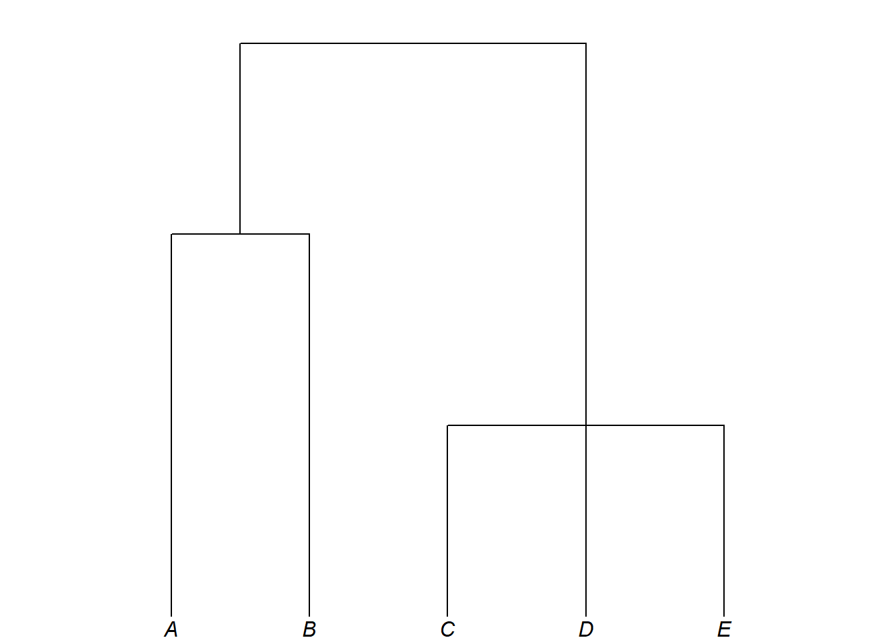
The irrelevance of left-to-right arrangement
In a phylogenetic tree, there is no meaningful difference between (A,B) and (B,A): in both, A and B are sisters under a shared parent. Likewise, (A,(B,C)), (A,(C,B)), ((B,C),A) and ((C,B),A) are all equivalent. The left-to-right ordering of tips reflects only the plotting convention, never a linguistic claim.
Genealogically-Sensitive Averages and Proportions
Section Overview
What you will learn: The two components needed for genealogically-sensitive calculations — a tree and a dataframe; how to use phylo_average() from phyloWeights; how to interpret ACL and BM method results and weights; and how the answer changes as the hypothesised tree changes
We now turn to calculating genealogically-sensitive proportions and averages. Consider these six trees, representing six different genealogical hypotheses for languages A, B, C, D — each shown with word order and consonant phoneme count:
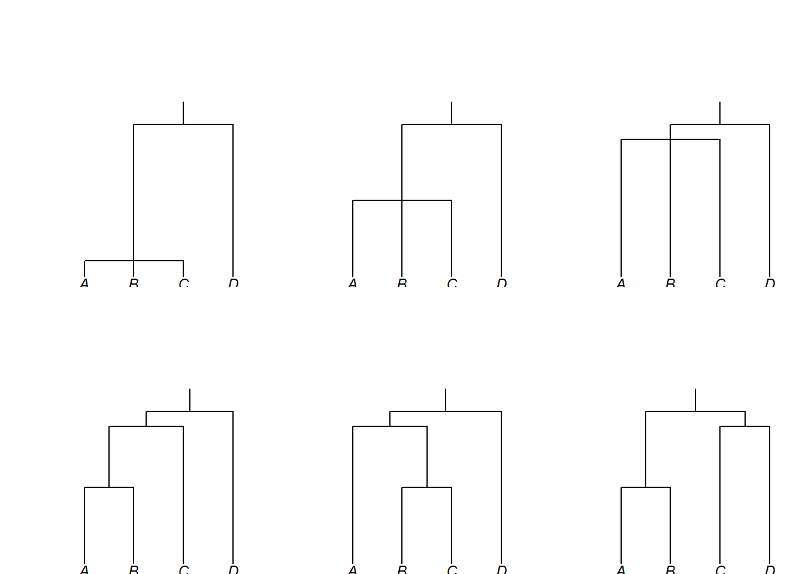
Required components
Calculating genealogically-sensitive averages requires two inputs:
- A
phyloormultiPhyloobject containing one or more trees - A dataframe with a column named
tip(matching the tip labels in the trees) and at least one column of numerical data
Our six trees are placed in a multiPhylo object:
Code
multiPhylo_ABCD <-
c(ape::read.tree(text = "(((A:0.2,B:0.2,C:0.2):1.8,D:2):0.3);"),
ape::read.tree(text = "(((A:1,B:1,C:1):1,D:2):0.3);"),
ape::read.tree(text = "(((A:1.8,B:1.8,C:1.8):0.2,D:2):0.3);"),
ape::read.tree(text = "((((A:1,B:1):0.8,C:1.8):0.2,D:2):0.3);"),
ape::read.tree(text = "(((A:1.8,(B:1,C:1):0.8):0.2,D:2):0.3);"),
ape::read.tree(text = "(((A:1,B:1):1,(C:1.8,D:1.8):0.2):0.3);"))Preparing the dataframe
The dataframe must contain a tip column whose values match the tree’s tip labels, plus numerical columns to be averaged. Use is_X or has_X names for proportion variables and n_X for count variables:
Code
data_ABCD <- data.frame(
tip = c("A", "B", "C", "D"),
is_SOV = c(1, 1, 1, 0),
n_consonants = c(18, 20, 22, 40),
stringsAsFactors = FALSE
)To calculate a proportion (e.g. proportion of SOV languages), fill the column with 1 (language has the property) and 0 (language does not). To calculate an average (e.g. mean consonant count), fill the column with the values.
In practice, the dataframe will often be read from a CSV file:
Code
data_ABCD <- read.csv("my_data_file.csv", stringsAsFactors = FALSE)Running phylo_average()
Code
results_ABCD <- phyloWeights::phylo_average(
phy = multiPhylo_ABCD,
data = data_ABCD
)
Computation time
phylo_average() may take up to several minutes for large trees or many input trees. It is normal for it to run silently for a few minutes before returning.
Interpreting the results
The results object contains several components, accessed with $.
The supplied data (as a reference):
Code
results_ABCD$data tip is_SOV n_consonants
1 A 1 18
2 B 1 20
3 C 1 22
4 D 0 40ACL genealogically-sensitive averages — one row per tree, one column per numerical variable. Notice how the answer changes as the genealogical hypothesis changes:
Code
results_ABCD$ACL_averages tree is_SOV n_consonants
1 tree1 0.5172 29.66
2 tree2 0.6000 28.00
3 tree3 0.7143 25.71
4 tree4 0.6769 26.64
5 tree5 0.6769 26.29
6 tree6 0.7115 25.92BM genealogically-sensitive averages:
Code
results_ABCD$BM_averages tree is_SOV n_consonants
1 tree1 0.5569 28.86
2 tree2 0.6952 26.10
3 tree3 0.7468 25.06
4 tree4 0.7257 25.56
5 tree5 0.7257 25.41
6 tree6 0.7289 25.51Both methods work by assigning weights to languages, reflecting how much each language contributes to the final result. The weights are in $ACL_weights and $BM_weights. Comparing these weights to the tree structure illuminates how the methods respond to different topologies:
Code
results_ABCD$ACL_weights tip tree1 tree2 tree3 tree4 tree5 tree6
1 A 0.1724 0.2 0.2381 0.1965 0.2838 0.2115
2 B 0.1724 0.2 0.2381 0.1965 0.1965 0.2115
3 C 0.1724 0.2 0.2381 0.2838 0.1965 0.2885
4 D 0.4828 0.4 0.2857 0.3231 0.3231 0.2885Code
results_ABCD$BM_weights tip tree1 tree2 tree3 tree4 tree5 tree6
1 A 0.1856 0.2317 0.2489 0.2289 0.2680 0.2289
2 B 0.1856 0.2317 0.2489 0.2289 0.2289 0.2289
3 C 0.1856 0.2317 0.2489 0.2680 0.2289 0.2711
4 D 0.4431 0.3048 0.2532 0.2743 0.2743 0.2711Results can be saved to CSV:
Code
write.csv(results_ABCD$ACL_averages, file = "my_ACL_averages.csv")Using and Adapting Trees from Glottolog
Section Overview
What you will learn: How to access glottolog’s genealogical metadata and family trees in R; how to combine multiple family trees into a supertree; how to add, remove, keep, clone and move tips and nodes; and how to assign realistic branch lengths
Glottolog’s genealogical data
Glottolog is a major online resource for quantitative typology, providing metadata about the world’s language varieties and their genealogical relationships. The glottoTrees package bundles this data directly, so no internet connection is needed once the package is installed. The package currently contains glottolog versions 4.0 through 5.0; by default all functions use the most recent bundled version.
Language metadata is accessed with get_glottolog_languages():
Code
language_metadata <- glottoTrees::get_glottolog_languages()
head(language_metadata, n = 10) glottocode isocodes name name_in_tree position tree
1 3adt1234 3Ad-Tekles 3Ad-Tekles tip 293
2 aala1237 Aalawa Aalawa tip 357
3 aant1238 Aantantara Aantantara tip 202
4 aari1238 <NA> <NA> Aari-Gayil node 53
5 aari1239 aiw Aari Aari tip 53
6 aari1240 aay Aariya Aariya <NA> NA
7 aasa1238 aas Aasax Aasax tip 293
8 aasd1234 Aasdring Aasdring tip 251
9 aata1238 Aatasaara Aatasaara tip 202
10 abaa1238 Rngaba Rngaba tip 85
tree_name
1 Afro-Asiatic
2 Austronesian
3 NuclearTransNewGuinea
4 SouthOmotic
5 SouthOmotic
6 <NA>
7 Afro-Asiatic
8 Indo-European
9 NuclearTransNewGuinea
10 Sino-TibetanTo save the full ~26,000-row metadata to a file for browsing in Excel:
Code
write.csv(language_metadata, "language_metadata.csv")Listed here are glottolog’s languages, dialects, subgroups and families, each identified by a name, an ISO-639-3 code (if available), and a glottocode (four letters + four digits). The table also describes each entity’s representation in the glottolog trees — its position as tip or node, and the tree’s number and name.
To access an older glottolog version, supply the version number:
Code
language_metadata_v4.3 <- glottoTrees::get_glottolog_languages(
glottolog_version = "4.3"
)
head(language_metadata_v4.3, n = 10) glottocode isocodes name name_in_tree position tree
1 3adt1234 3Ad-Tekles 3Ad-Tekles tip 186
2 aala1237 Aalawa Aalawa tip 205
3 aant1238 Aantantara Aantantara tip 145
4 aari1238 <NA> <NA> Aari-Gayil node 85
5 aari1239 aiw Aari Aari tip 85
6 aari1240 aay Aariya Aariya <NA> NA
7 aasa1238 aas Aasax Aasax tip 186
8 aasd1234 Aasdring Aasdring tip 179
9 aata1238 Aatasaara Aatasaara tip 145
10 abaa1238 Rngaba Rngaba tip 329
tree_name
1 Afro-Asiatic
2 Austronesian
3 NuclearTransNewGuinea
4 SouthOmotic
5 SouthOmotic
6 <NA>
7 Afro-Asiatic
8 Indo-European
9 NuclearTransNewGuinea
10 Sino-TibetanBriefer metadata about glottolog’s language families is available via get_glottolog_families():
Code
family_metadata <- glottoTrees::get_glottolog_families()
head(family_metadata, n = 10) tree tree_name n_tips n_nodes main_macroarea
1 1 Abkhaz-Adyge 14 7 Eurasia
2 2 Surmic 21 14 Africa
3 3 Tamaic 13 6 Africa
4 4 Yareban 9 4 Papunesia
5 5 Bogia 2 1 Papunesia
6 6 Teberan 14 3 Papunesia
7 7 Saliban 3 2 South America
8 8 Hibito-Cholon 2 1 South America
9 9 Kiwaian 18 6 Papunesia
10 10 Pahoturi 5 3 PapunesiaThe current default version divides the world’s languages into over 400 families, with an internal node for each. Geographically, glottolog assigns each language variety to one of six macroareas: Africa, Australia, Eurasia, Papunesia, South America, or North America.
Accessing glottolog’s family trees
Glottolog’s family trees are stored in a multiPhylo object. The current default version object is glottolog_trees_v5.0. Trees can be retrieved by number or by family name.
By name, using get_glottolog_trees():
Code
tree_GA <- glottoTrees::get_glottolog_trees("GreatAndamanese")
plot(tree_GA, x.lim = c(-0.3, 14))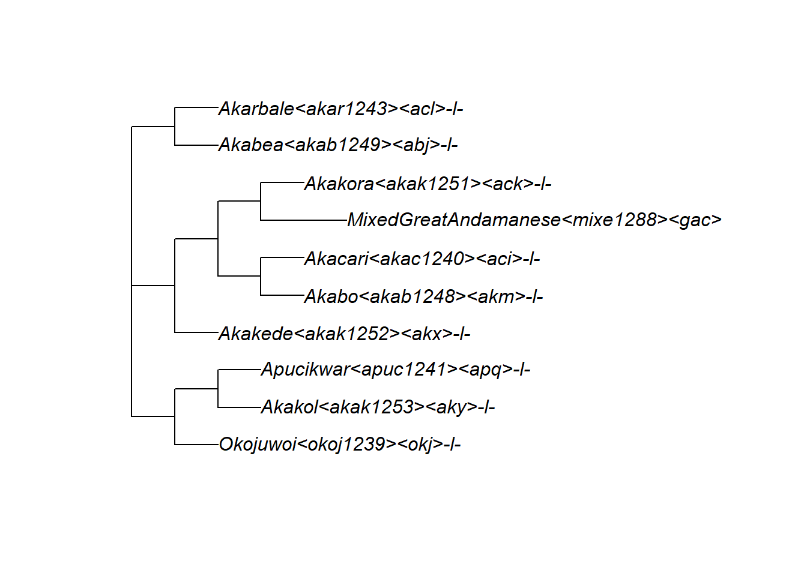
To find the number of any family’s tree, use which_tree():
Code
glottoTrees::which_tree("GreatAndamanese")GreatAndamanese
190 Code
glottoTrees::which_tree(c("Turkic", "Tupian", "Tuu"))Turkic Tupian Tuu
112 152 303 In glottolog’s trees, tip and node labels are long strings including the language name, glottocode, and ISO code. The function abridge_labels() shortens them to just the glottocode:
Code
tree_GA_abr <- glottoTrees::abridge_labels(tree_GA)
plot_glotto(tree_GA_abr)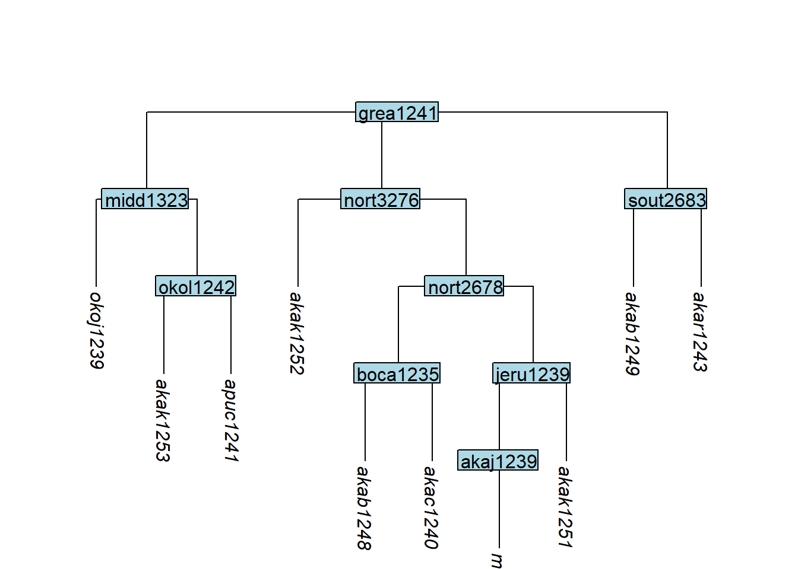
Equal branch lengths in glottolog
In glottolog’s trees, all branches are of equal length. This is an unrealistic assumption — see Section How to add branch lengths for how to assign more realistic lengths.
How to combine trees
Comparison of languages across families requires a commitment to a genealogical hypothesis. glottoTrees provides tools for making such hypotheses explicit by combining multiple glottolog trees into a single composite tree.
As a small example, here we combine five glottolog families to represent the hypothesised Arnhem group in northern Australia (Green 2003):
Code
arnhem_family_names <- c("Gunwinyguan", "Mangarrayi-Maran",
"Maningrida", "Kungarakany", "Gaagudju")
multiPhylo_arnhem <- glottoTrees::get_glottolog_trees(arnhem_family_names)assemble_rake() joins the trees in a multiPhylo object into a single tree with a rake structure at the root (all families joining directly to a shared root with no additional subgrouping):
Code
tree_arnhem <- glottoTrees::assemble_rake(multiPhylo_arnhem)Code
tree_arnhem_abr <- glottoTrees::abridge_labels(tree_arnhem)
plot_glotto(tree_arnhem_abr, nodelabels = FALSE)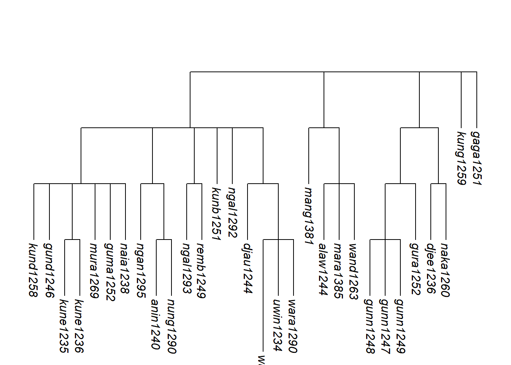
More structure can be added by using assemble_rake() iteratively. Here we hypothesise that Gunwinyguan, Mangarrayi-Maran and Maningrida form a subgroup before joining the isolates:
Code
multiPhylo_A <- glottoTrees::get_glottolog_trees(
c("Gunwinyguan", "Mangarrayi-Maran", "Maningrida")
)
tree_A <- glottoTrees::assemble_rake(multiPhylo_A)
multiPhylo_arnhem2 <- c(tree_A,
glottoTrees::get_glottolog_trees(c("Kungarakany", "Gaagudju")))
tree_arnhem2 <- glottoTrees::assemble_rake(multiPhylo_arnhem2)
tree_arnhem2_abr <- glottoTrees::abridge_labels(tree_arnhem2)
plot_glotto(tree_arnhem2_abr, nodelabels = FALSE)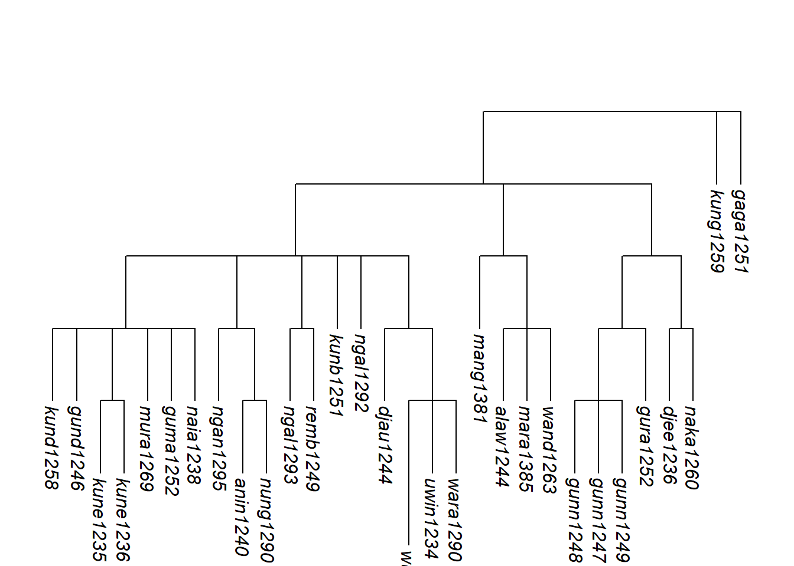
For studies covering many families, assemble_supertree() joins all families in the default version of glottolog into a single supertree, organised first by macroarea. The tree is large, so we do not plot it here:
Code
my_supertree <- glottoTrees::assemble_supertree()The macro-level groupings can be customised. To join all families in a flat 420-pronged rake (no macroarea grouping):
Code
my_supertree <- glottoTrees::assemble_supertree(macro_groups = NULL)To merge North and South America into a single group:
Code
my_list <- list("Africa", "Australia", "Eurasia", "Papunesia",
c("South America", "North America"))
my_supertree <- glottoTrees::assemble_supertree(macro_groups = my_list)To include only families from Africa and Eurasia (as separate nodes):
Code
my_supertree <- glottoTrees::assemble_supertree(
macro_groups = list("Africa", "Eurasia")
)How to modify trees
Typological studies often require trees whose tip sets differ from glottolog’s. The glottoTrees package supplies a complete toolkit for modifying tree topology. The following examples all use the Great Andamanese tree with abridged labels:
Code
tree_GA <- glottoTrees::get_glottolog_trees("GreatAndamanese")
tree_GA_abr <- glottoTrees::abridge_labels(tree_GA)
plot_glotto(tree_GA_abr)
How to remove tips
remove_tip() removes specified tips; if all tips below a node are removed, that node is also removed automatically:
Code
tree_GAa <- glottoTrees::remove_tip(tree_GA_abr,
label = c("akab1249", "akak1251", "apuc1241"))
plot_glotto(tree_GAa)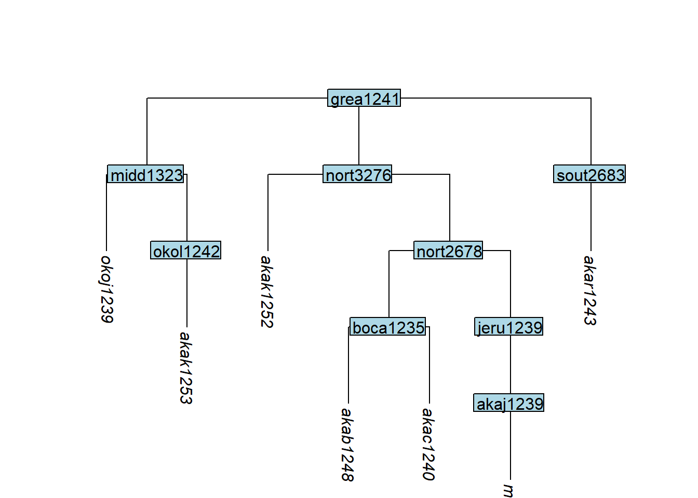
Code
# Removing both tips under a node also removes the node
tree_GAb <- glottoTrees::remove_tip(tree_GA_abr,
label = c("akab1249", "akar1243"))
plot_glotto(tree_GAb)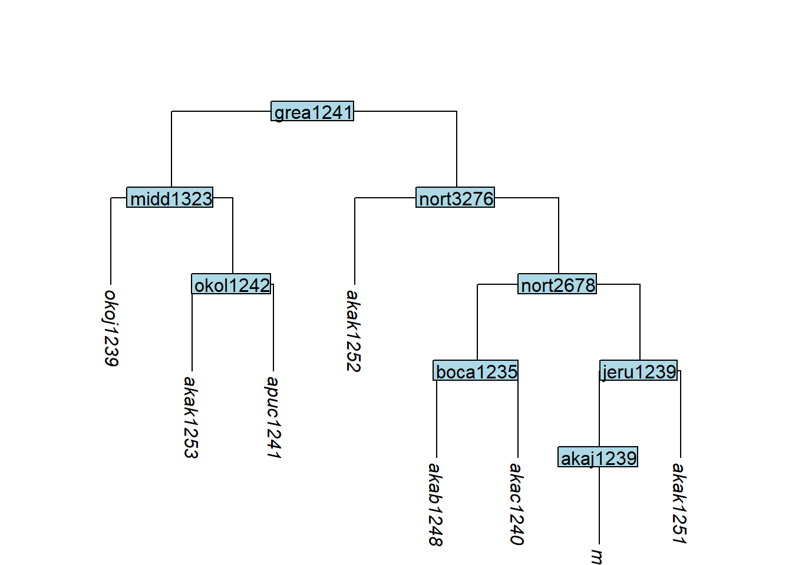
keep_tip() specifies which tips to retain (the complement of remove_tip()):
Code
tree_GAc <- glottoTrees::keep_tip(tree_GA_abr,
label = c("akar1243", "akak1251", "akac1240",
"akak1252", "apuc1241", "okoj1239"))
plot_glotto(tree_GAc)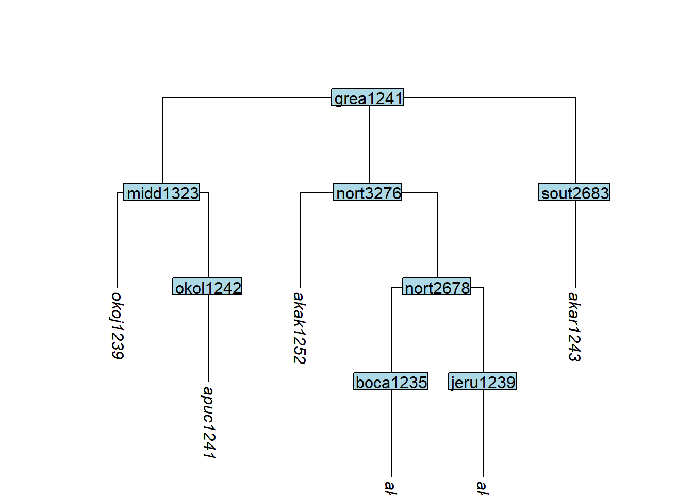
Code
# Node boca1235 is removed because neither of its tips are kept
tree_GAd <- glottoTrees::keep_tip(tree_GA_abr,
label = c("akar1243", "akak1251", "akak1252",
"apuc1241", "okoj1239"))
plot_glotto(tree_GAd)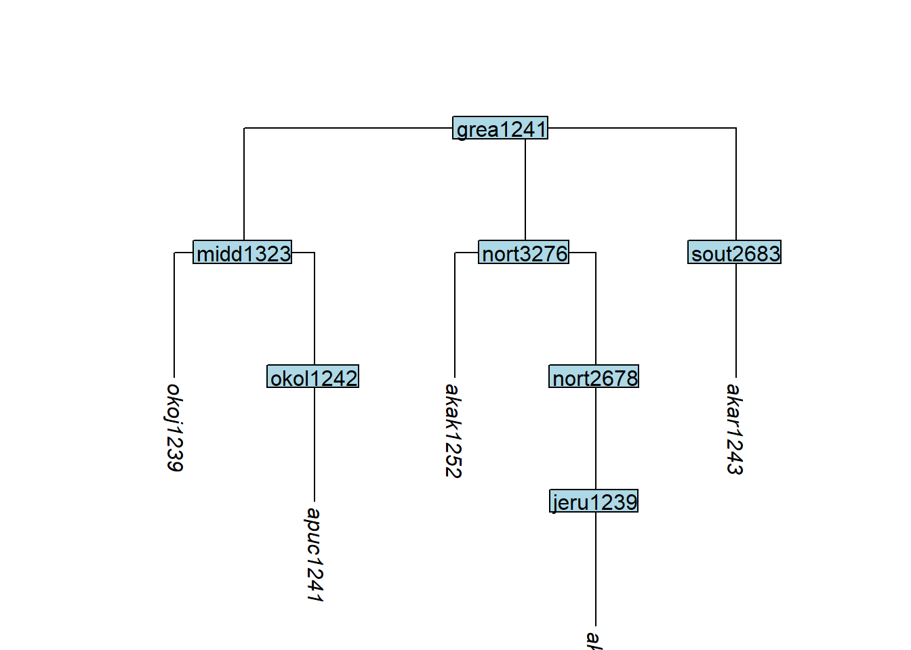
How to remove tips and convert nodes to tips
keep_as_tip() accepts both tip and node labels. Tips are kept; nodes are converted into tips (all structure below them is removed). This is useful when the typologist has data at the language level but glottolog represents languages as internal nodes above dialect tips:
Code
tree_GAe <- glottoTrees::keep_as_tip(
tree_GA_abr,
label = c("akar1243", "akak1251", "akak1252",
"apuc1241", "okoj1239", "boca1235")
)
plot_glotto(tree_GAe)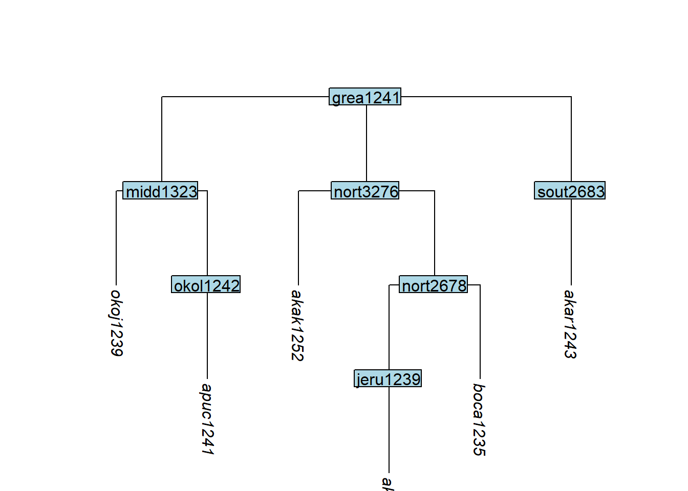
A typical workflow: read a CSV with a tip column and pass it directly to keep_as_tip():
Code
my_dataframe <- read.csv("my_data_file.csv", stringsAsFactors = FALSE)
my_new_tree <- glottoTrees::keep_as_tip(my_old_tree,
label = my_dataframe$tip)To convert specific nodes to tips without removing anything else:
Code
tree_GAf <- glottoTrees::convert_to_tip(tree_GA_abr,
label = c("okol1242", "sout2683"))
plot_glotto(tree_GAf)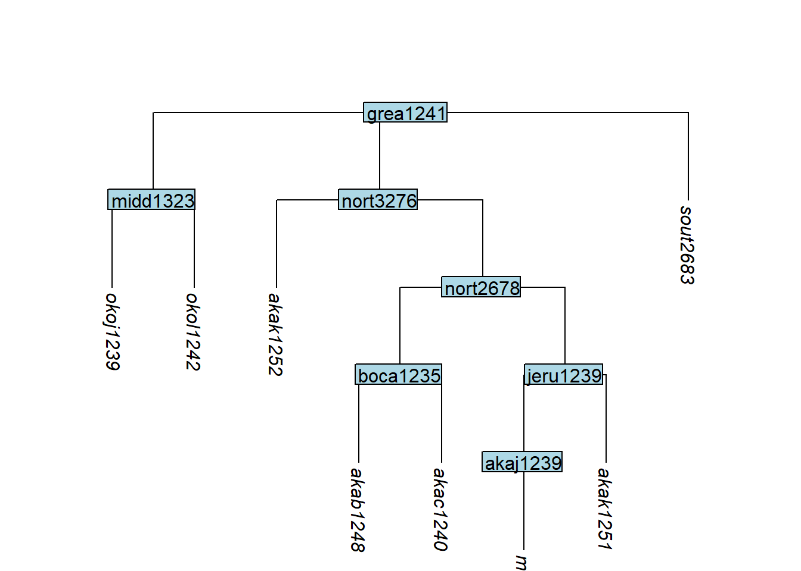
How to remove internal nodes
After removing tips, some remaining tips may sit under a node that dominates only them (a non-branching node). collapse_node() removes such nodes, reducing tip depth:
Code
tree_GAg <- glottoTrees::collapse_node(tree_GAc,
label = c("boca1235", "okol1242"))
plot_glotto(tree_GAg)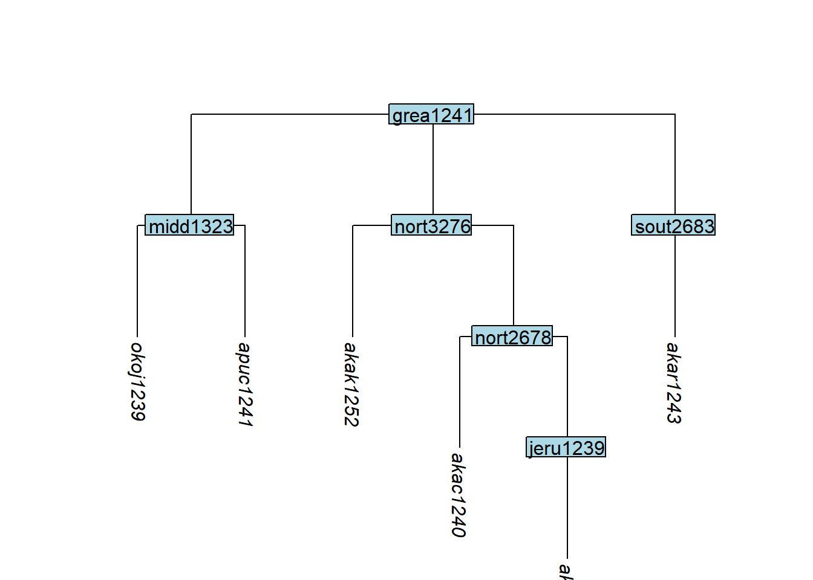
nonbranching_nodes() identifies which nodes have only one child:
Code
glottoTrees::nonbranching_nodes(tree_GAc)[1] "okol1242" "boca1235" "jeru1239" "sout2683"Code
glottoTrees::nonbranching_nodes(tree_GAg)[1] "jeru1239" "sout2683"collapse_node() can also alter subgrouping by converting a nested structure ((A,B),C) into a flat one (A,B,C):
Code
tree_GAh <- glottoTrees::collapse_node(tree_GA_abr, label = "okol1242")
plot_glotto(tree_GAh)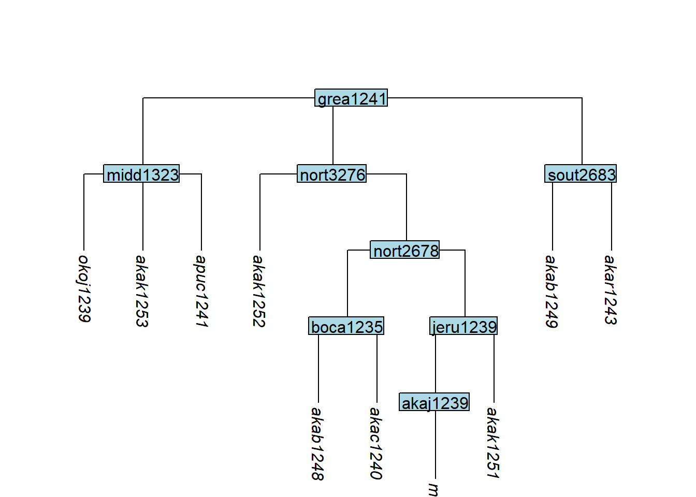
How to add tips
add_tip() adds a new tip below a specified parent node:
Code
tree_GAi <- glottoTrees::add_tip(tree_GA_abr,
label = "xxxx1234",
parent_label = "sout2683")
plot_glotto(tree_GAi)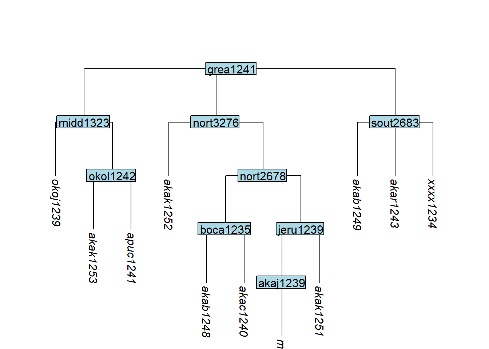
How to clone tips
clone_tip() duplicates one or more tips — useful when glottolog provides one glottocode for multiple lects in the typologist’s sample:
Code
tree_GAj <- glottoTrees::clone_tip(tree_GA_abr,
label = c("akar1243", "akak1252"))
plot_glotto(tree_GAj)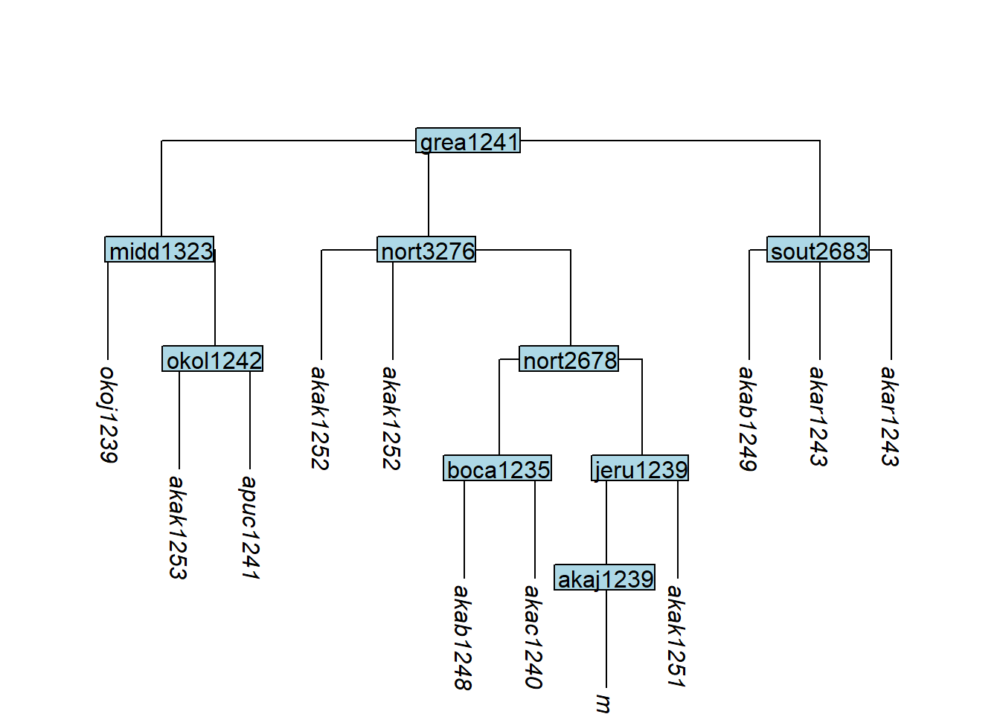
Setting subgroup = TRUE places clones in a new subgroup node:
Code
tree_GAk <- glottoTrees::clone_tip(tree_GA_abr,
label = c("akar1243", "akak1252"),
subgroup = TRUE)
plot_glotto(tree_GAk)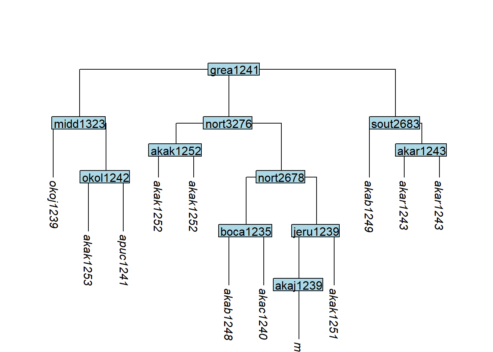
Multiple clones can be created with the n argument:
Code
tree_GAl <- glottoTrees::clone_tip(tree_GA_abr,
label = "akab1248",
n = 3,
subgroup = TRUE)
plot_glotto(tree_GAl)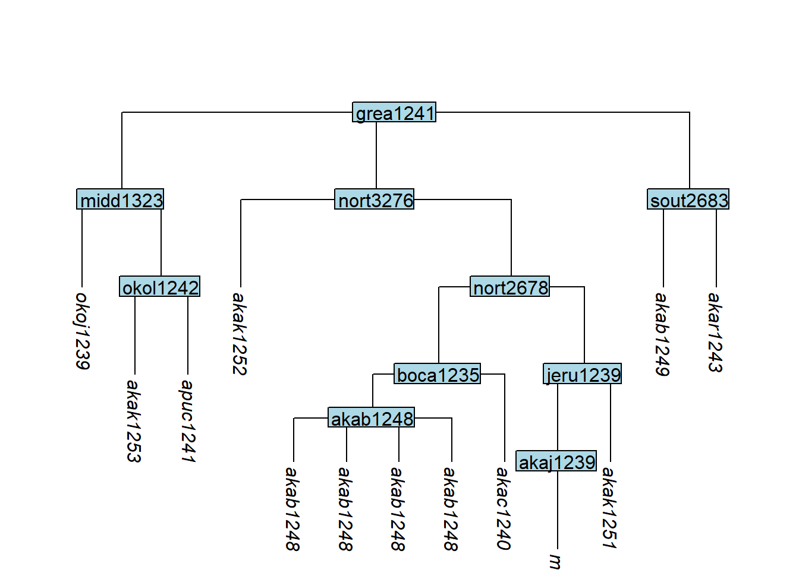
After cloning, tip labels may no longer be unique. apply_duplicate_suffixes() adds a hyphen-number suffix to duplicate labels:
Code
tree_GAm <- glottoTrees::apply_duplicate_suffixes(tree_GAj)
plot_glotto(tree_GAm)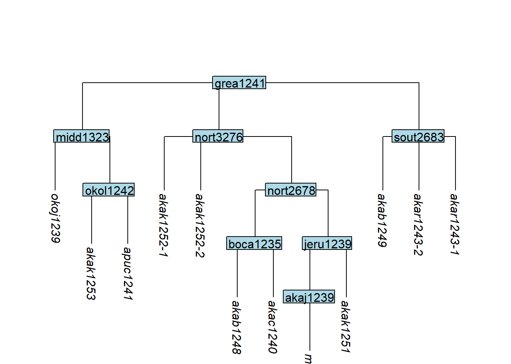
How to move a tip
move_tip() moves a tip to a new position beneath a specified parent node:
Code
tree_GAn <- glottoTrees::move_tip(tree_GA_abr,
label = "apuc1241",
parent_label = "jeru1239")
plot_glotto(tree_GAn)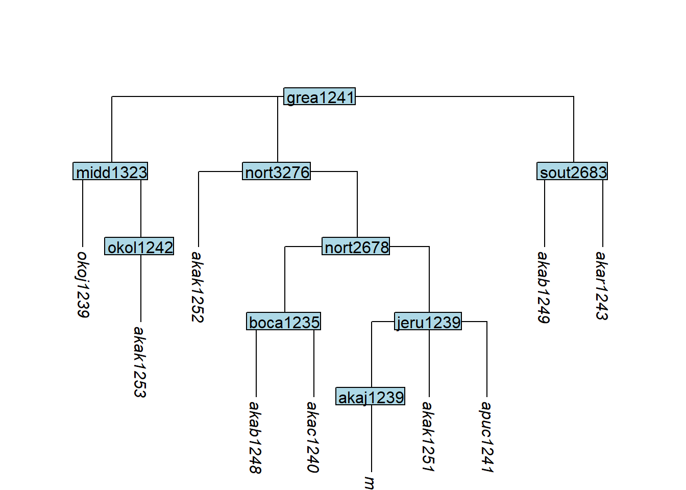
How to move a node and its descendants
move_node() moves an internal node — along with all structure below it — to a new parent:
Code
tree_GAo <- glottoTrees::move_node(tree_GA_abr,
label = "jeru1239",
parent_label = "okol1242")
plot_glotto(tree_GAo)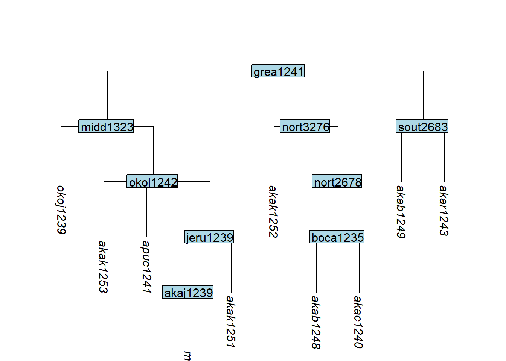
Summary: toolkit for curating tree topology
The functions remove_tip(), keep_tip(), keep_as_tip(), convert_to_tip(), collapse_node(), add_tip(), clone_tip(), move_tip() and move_node() provide a general-purpose toolkit for modifying a tree’s set of tips and its subgrouping structure to match any typological sample.
How to add branch lengths
Branch lengths convey information and most phylogenetic comparative methods — including genealogically-sensitive averages — are sensitive to relative branch lengths. Glottolog’s trees contain equal branch lengths, which is almost certainly unrealistic.
A good approximation to the most likely distribution of branch lengths under a variety of assumptions is exponential (Venditti, Meade, and Pagel 2010): very long branches are rare; very short ones are frequent. rescale_branches_exp() implements this by setting the deepest branches to length 1/2, the next layer to 1/4, and so on:
Code
tree_GAp <- glottoTrees::rescale_branches_exp(tree_GA_abr)
plot_glotto(tree_GAp)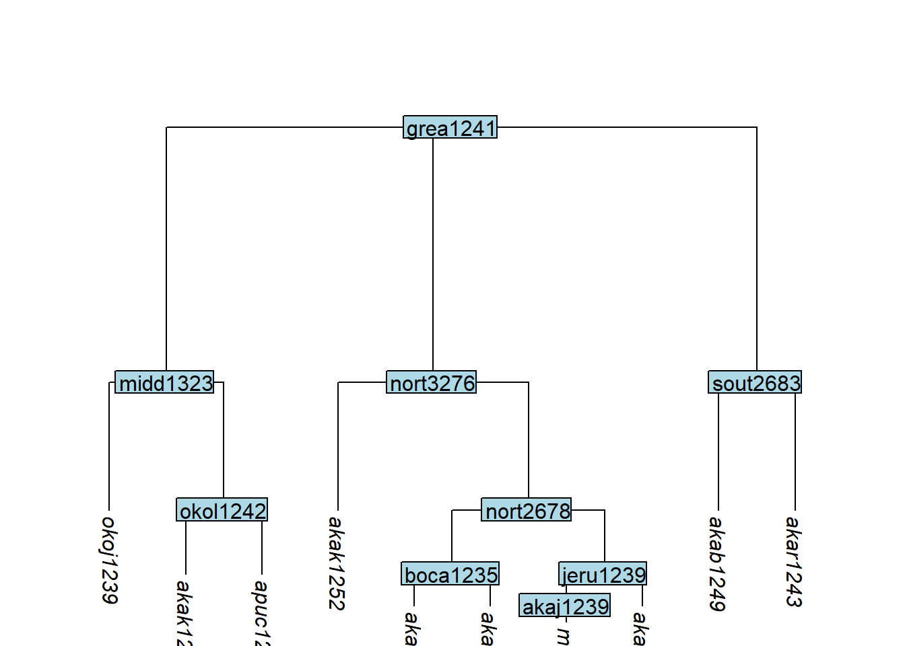
Code
tree_EA <- glottoTrees::get_glottolog_trees("Eskimo-Aleut")
tree_EA_abr <- glottoTrees::abridge_labels(tree_EA)
tree_EAa <- glottoTrees::rescale_branches_exp(tree_EA_abr)
plot_glotto(tree_EAa, nodelabels = FALSE)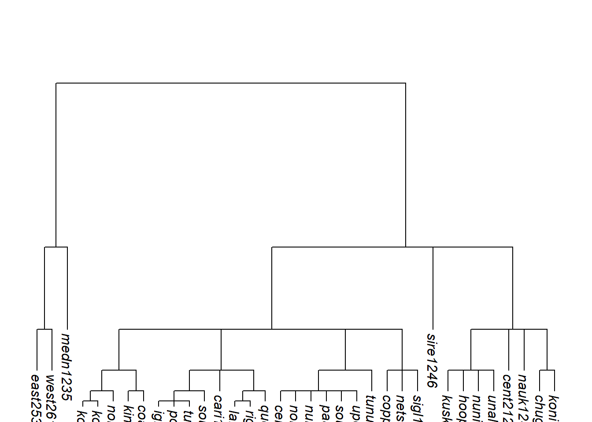
ultrametricize() stretches terminal branches so that all tips are equidistant from the root:
Code
tree_EAb <- glottoTrees::ultrametricize(tree_EAa)
plot_glotto(tree_EAb, nodelabels = FALSE)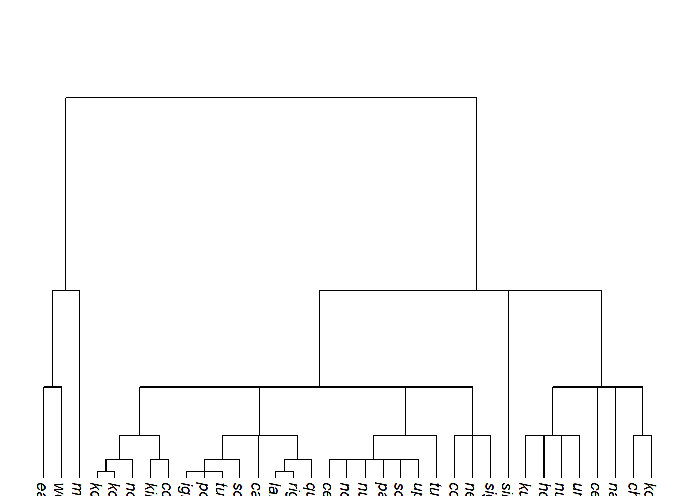
rescale_deepest_branches() adjusts only the deepest layer of branches — useful when multiple family trees have been joined and you wish to control the implied distance between first-order branches. Here we triple the deepest branch length and then ultrametricise:
Code
tree_arnhem_a <- glottoTrees::rescale_branches_exp(tree_arnhem_abr)
tree_arnhem_b <- glottoTrees::rescale_deepest_branches(tree_arnhem_a, 1.5)
tree_arnhem_c <- glottoTrees::ultrametricize(tree_arnhem_b)
plot_glotto(tree_arnhem_c, nodelabels = FALSE)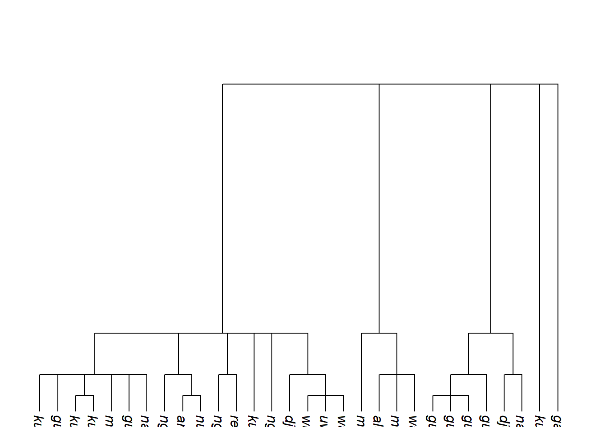
Exporting trees
Trees can be saved in Newick format using write.tree() from ape, for use with other software such as FigTree:
Code
ape::write.tree(tree_arnhem_c, "my_arnhem_tree.tree")relabel_with_names() replaces glottocodes with glottolog’s full language names before plotting or exporting:
Code
tree_arnhem_c_namelabels <- glottoTrees::relabel_with_names(tree_arnhem_c)
plot_glotto(tree_arnhem_c_namelabels, nodelabels = FALSE)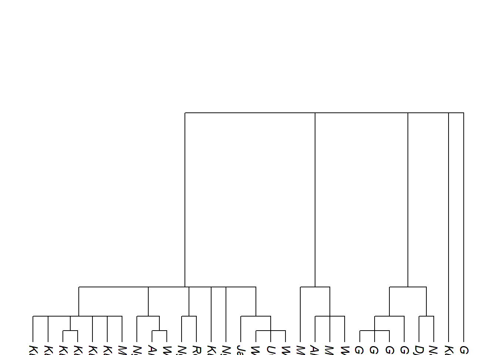
Worked Example: Yin (2020)
Section Overview
What you will learn: How to apply the full phylogenetic workflow — supertree construction, tip curation, branch length assignment, and genealogically-sensitive averaging — to a real published typological dataset. This section reproduces the phylogenetic analysis of Yin (2020).
Yin (2020) examined violations of the sonority sequencing principle in 496 languages and calculated the genealogically-sensitive proportions of languages in which various violations occurred. The language sample consisted of 496 languages from the CLICS2 database (Anderson et al. 2018) and the AusPhon-Lexicon database (Round 2017).
Computation Time
The supertree construction in this section (assemble_supertree()) may take several minutes to run, depending on your hardware. This is normal. We recommend running the code chunks in this section interactively rather than knitting the full document.
The data
Yin’s raw data consists of language names, glottocodes, and binary indicators of whether each language has consonant clusters with sonority reversals in word-initial onsets or word-final codas (coded 1 for yes, 0 for no). This dataset is provided with phyloWeights as the dataframe yin_2020_data, with columns name, tip, has_onset_violation and has_coda_violation. The first ten rows:
Code
head(yin_2020_data, n = 10) name tip has_onset_violation has_coda_violation
1 Abkhaz abkh1244 1 1
2 Abui abui1241 0 0
3 Achagua acha1250 0 1
4 Adang adan1251 0 1
5 Adnyamathanha adny1235 0 0
6 Adyghe adyg1241 1 1
7 Hokkaidoainu ainu1240 0 0
8 Alawa alaw1244 1 0
9 Standardalbanian alba1267 1 1
10 Aleut aleu1260 1 1Preparing the supertree
The tree for Yin’s study was constructed from a glottolog supertree. The language sample covered relatively few families in the Americas (so North and South America were merged) and only one African language (Arabic), so Africa and Eurasia were also merged. We use glottolog v4.2, as in the original study, to ensure exact reproducibility:
Code
yin_macro <- list(
c("South America", "North America"),
c("Africa", "Eurasia"),
"Papunesia",
"Australia"
)
supertree <- glottoTrees::assemble_supertree(
macro_groups = yin_macro,
glottolog_version = "4.2"
)
supertree_abr <- glottoTrees::abridge_labels(supertree)Five tips were cloned, in cases where Yin had data for two varieties corresponding to just one tip in the glottolog supertree:
Code
supertree_a <- glottoTrees::clone_tip(
supertree_abr,
subgroup = TRUE,
label = c("ayab1239", "basu1242", "biri1256", "ikar1243", "peri1265")
)
supertree_b <- glottoTrees::apply_duplicate_suffixes(supertree_a)Eight tips were added, in cases where for sister lects (A, B), glottolog placed A as a node above B. In such cases, a new tip A was placed below the existing glottolog node A:
Code
supertree_c <- supertree_b
nodes_to_add_as_tips <- c("alor1249", "gami1243", "guri1247", "mand1415",
"sins1241", "wang1291", "warl1254", "yand1253")
for (node_i in nodes_to_add_as_tips) {
supertree_c <- glottoTrees::add_tip(supertree_c,
label = node_i,
parent_label = node_i)
}From this supertree, only the 496 languages in Yin’s dataset were kept. The internal node mada1298 and all non-branching internal nodes were then collapsed:
Code
supertree_d <- glottoTrees::keep_as_tip(supertree_c,
label = yin_2020_data$tip)
supertree_e <- glottoTrees::collapse_node(supertree_d,
label = "mada1298")
supertree_f <- glottoTrees::collapse_node(
supertree_e,
label = glottoTrees::nonbranching_nodes(supertree_e)
)Finally, branch lengths were assigned. Branches were first assigned exponential lengths. Then, to diminish the importance of macro groups, the branches above them were shortened to 1/40. The effect is that the implied distance between families in different macro groups is only marginally greater than between families within a single macro group:
Code
supertree_g <- glottoTrees::rescale_branches_exp(supertree_f)
yin_2020_tree <- glottoTrees::rescale_deepest_branches(supertree_g, 1/40)The resulting tree, plotted as a fan with full language names:
Code
full_names <- yin_2020_data$name[
match(yin_2020_tree$tip.label, yin_2020_data$tip)
]
name_tree <- yin_2020_tree
name_tree$tip.label <- full_names
plot(ape::ladderize(name_tree, right = FALSE),
type = "fan",
cex = 0.3,
label.offset = 0.002,
edge.width = 0.5)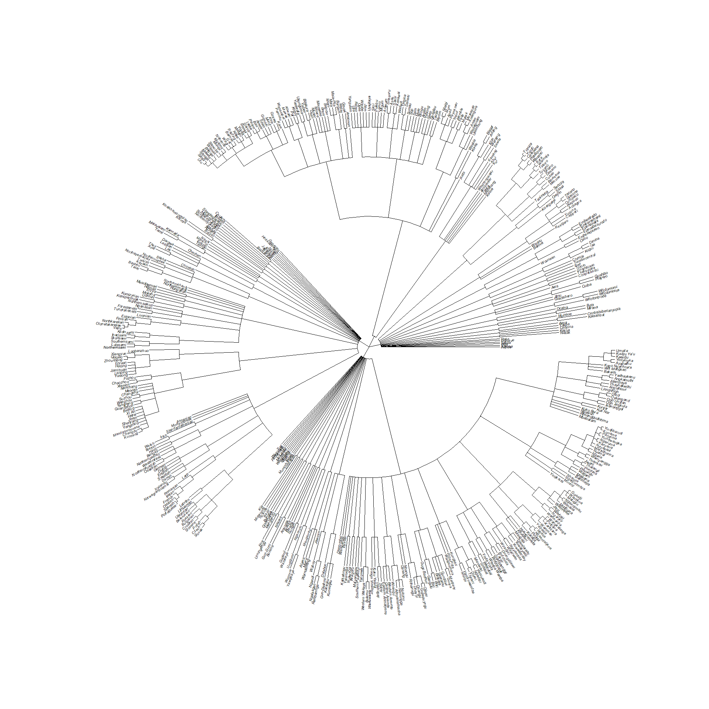
Preparing the dataframe
The dataframe yin_2020_data already has a tip column and two numerical columns (has_onset_violation and has_coda_violation), so it meets the requirements of phylo_average() directly. Non-numeric columns (here, name) are ignored automatically.
Calculating genealogically-sensitive proportions
Code
yin_2020_results <- phyloWeights::phylo_average(
phy = yin_2020_tree,
data = yin_2020_data
)Since we are using a single tree, the results are compact. The genealogically-sensitive proportions according to the ACL and BM methods:
Code
yin_2020_results$ACL_averages tree has_onset_violation has_coda_violation
1 tree1 0.3711 0.4098Code
yin_2020_results$BM_averages tree has_onset_violation has_coda_violation
1 tree1 0.4015 0.3848The first ten rows of phylogenetic weights from each method:
Code
head(yin_2020_results$ACL_weights, n = 10) name tip tree1
1 Abkhaz abkh1244 0.00698583
2 Abui abui1241 0.00126372
3 Achagua acha1250 0.00024567
4 Adang adan1251 0.00021978
5 Adnyamathanha adny1235 0.00006377
6 Adyghe adyg1241 0.00698583
7 Hokkaidoainu ainu1240 0.01746458
8 Alawa alaw1244 0.00196527
9 Standardalbanian alba1267 0.00236997
10 Aleut aleu1260 0.00852669Code
head(yin_2020_results$BM_weights, n = 10) name tip tree1
1 Abkhaz abkh1244 0.0049475
2 Abui abui1241 0.0021424
3 Achagua acha1250 0.0009110
4 Adang adan1251 0.0009392
5 Adnyamathanha adny1235 0.0008929
6 Adyghe adyg1241 0.0049475
7 Hokkaidoainu ainu1240 0.0064305
8 Alawa alaw1244 0.0027424
9 Standardalbanian alba1267 0.0040995
10 Aleut aleu1260 0.0055528As a point of comparison, the raw (genealogically unweighted) proportions are the simple column means:
Code
mean(yin_2020_data$has_onset_violation)[1] 0.3649Code
mean(yin_2020_data$has_coda_violation)[1] 0.3145The difference between the raw proportions and the phylogenetically-weighted proportions reflects the correction for genealogical relatedness. Which direction the correction goes, and how large it is, depends on the distribution of the trait across the tree.
Using These Methods in Typological Research
As we seek to analyse the empirical diversity of attested languages, there are fundamental reasons why genealogy must be part of the picture (see Macklin-Cordes and Round 2021a). And since the genealogies of human languages are still incompletely known, it is imperative to make our phylogenetic hypotheses and assumptions as explicit and as testable as possible. Through glottoTrees and phyloWeights, linguistic trees and the code used to produce them can be published together with typological studies. This enables subsequent researchers to replicate findings and — crucially — to modify the phylogenetic assumptions and thereby test further hypotheses.
Citing these packages
If you find glottoTrees and phyloWeights useful in your research, please cite them as Round (2021a) and Round (2021b) respectively. To cite the notion of genealogically-sensitive averages and proportions, cite Macklin-Cordes and Round (2021a) and/or the more specific references therein.
If you encounter a bug or anomalous behaviour, please use the GitHub Issues pages or contact Erich Round directly at e.round@uq.edu.au.
Citation & Session Info
Citation
Erich Round and Martin Schweinberger. 2026. Practical Phylogenetic Methods for Linguistic Typology. The Language Technology and Data Analysis Laboratory (LADAL), The University of Queensland, Australia. url: https://ladal.edu.au/tutorials/phylogenetic_methods/phylogenetic_methods.html (Version 3.1.1). doi: 10.5281/zenodo.19332927.
@manual{erichroundandmartinschweinberger2026practical,
author = {Erich Round and Martin Schweinberger},
title = {Practical Phylogenetic Methods for Linguistic Typology},
year = {2026},
note = {https://ladal.edu.au/tutorials/phylogenetic_methods/phylogenetic_methods.html},
organization = {The Language Technology and Data Analysis Laboratory (LADAL), The University of Queensland, Australia},
edition = {3.1.1}
doi = {10.5281/zenodo.19332927}
}Code
sessionInfo()R version 4.4.2 (2024-10-31 ucrt)
Platform: x86_64-w64-mingw32/x64
Running under: Windows 11 x64 (build 26200)
Matrix products: default
locale:
[1] LC_COLLATE=English_United States.utf8
[2] LC_CTYPE=English_United States.utf8
[3] LC_MONETARY=English_United States.utf8
[4] LC_NUMERIC=C
[5] LC_TIME=English_United States.utf8
time zone: Australia/Brisbane
tzcode source: internal
attached base packages:
[1] stats graphics grDevices datasets utils methods base
other attached packages:
[1] phyloWeights_0.4 glottoTrees_0.1.13 flextable_0.9.11 dplyr_1.2.0
[5] ape_5.8-1 checkdown_0.0.13
loaded via a namespace (and not attached):
[1] tidyselect_1.2.1 farver_2.1.2 phytools_2.5-2
[4] S7_0.2.1 optimParallel_1.0-2 fastmap_1.2.0
[7] combinat_0.0-8 fontquiver_0.2.1 digest_0.6.39
[10] lifecycle_1.0.5 magrittr_2.0.4 compiler_4.4.2
[13] rlang_1.1.7 tools_4.4.2 igraph_2.2.2
[16] yaml_2.3.10 data.table_1.17.0 knitr_1.51
[19] phangorn_2.12.1 clusterGeneration_1.3.8 askpass_1.2.1
[22] htmlwidgets_1.6.4 mnormt_2.1.2 scatterplot3d_0.3-45
[25] xml2_1.3.6 RColorBrewer_1.1-3 expm_1.0-0
[28] withr_3.0.2 purrr_1.2.1 numDeriv_2016.8-1.1
[31] grid_4.4.2 gdtools_0.5.0 ggplot2_4.0.2
[34] scales_1.4.0 iterators_1.0.14 MASS_7.3-61
[37] cli_3.6.5 rmarkdown_2.30 ragg_1.5.1
[40] generics_0.1.4 rstudioapi_0.17.1 stringr_1.6.0
[43] maps_3.4.3 parallel_4.4.2 BiocManager_1.30.27
[46] vctrs_0.7.2 Matrix_1.7-2 jsonlite_2.0.0
[49] fontBitstreamVera_0.1.1 patchwork_1.3.0 systemfonts_1.3.1
[52] foreach_1.5.2 tidyr_1.3.2 glue_1.8.0
[55] codetools_0.2-20 DEoptim_2.2-8 stringi_1.8.7
[58] gtable_0.3.6 quadprog_1.5-8 tibble_3.3.1
[61] pillar_1.11.1 htmltools_0.5.9 openssl_2.3.2
[64] R6_2.6.1 textshaping_1.0.0 doParallel_1.0.17
[67] evaluate_1.0.5 lattice_0.22-6 markdown_2.0
[70] renv_1.1.7 fontLiberation_0.1.0 Rcpp_1.1.1
[73] zip_2.3.2 uuid_1.2-1 fastmatch_1.1-8
[76] coda_0.19-4.1 nlme_3.1-166 officer_0.7.3
[79] xfun_0.56 pkgconfig_2.0.3
AI Transparency Statement
This tutorial was adapted for LADAL by Martin Schweinberger with the assistance of Claude (claude.ai), a large language model created by Anthropic. The original tutorial text and all R code were authored by Erich Round and taken from the Supplementary Materials of Macklin-Cordes and Round (2021a). The adaptation involved converting the document to Quarto format, updating all div blocks to Quarto callouts, updating package installation code and glottolog version references, and adding LADAL-style section overviews. Erich Round and Martin Schweinberger take full responsibility for the accuracy of the content.
References
Altschul, Stephen F., Raymond J. Carroll, and David J. Lipman. 1989. “Weights for Data Related by a Tree.” Journal of Molecular Biology 207 (4): 647–53. https://doi.org/https://doi.org/10.1016/0022-2836(89)90234-9.
Anderson, Cormac, Robert Forkel, Simon J Greenhill, Johann-Mattis List, Christoph Rzymski, and Tiago Tresoldi. 2018. “CLICS2: An Improved Database of Cross-Linguistic Colexifications Assembling Lexical Data with the Help of Cross-Linguistic Data Formats.” Linguistic Typology 22 (2): 277–306. https://doi.org/https://doi.org/10.1515/lingty-2018-0010.
Green, Rebecca. 2003. “Proto Maningrida with Proto Arnhem: Evidence from Verbal Inflectional Suffixes.” In The Non-Pama-Nyungan Languages of Northern Australia : Comparative Studies of the Continent’s Most Linguistically Complex Region, edited by Nicholas Evans, 369–421. Pacific Linguistics.
Macklin-Cordes, Jayden, and Erich R Round. 2021a. “Challenges of Sampling and How Phylogenetic Comparative Methods Help: With a Case Study of the Pama-Nyungan Laminal Contrast.”
———. 2021b. “Phylogenetic Comparative Methods: What All the Fuss Is about, and How to Use Them in Everyday Research.” Brisbane.
Round, Erich R. 2017. “The AusPhon-Lexicon Project: 2 Million Normalized Segments Across 300 Australian Languages.”
———. 2021a. glottoTrees: Phylogenetic Trees in Linguistics. https://github.com/erichround/glottoTrees.
———. 2021b. phyloWeights: Calculation of Genealogically-Sensitive Proportions and Averages. https://github.com/erichround/phyloWeights.
Stone, Eric A., and Arend Sidow. 2007. “Constructing a Meaningful Evolutionary Average at the Phylogenetic Center of Mass.” BMC Bioinformatics 8 (1): 222. https://doi.org/https://doi.org/10.1186/1471-2105-8-222.
Venditti, Chris, Andrew Meade, and Mark Pagel. 2010. “Phylogenies Reveal New Interpretation of Speciation and the Red Queen.” Nature 463 (7279): 349–52. https://doi.org/https://doi.org/10.1038/nature08630.
Yin, Ruihua. 2020. “Violations of the Sonority Sequencing Principle: How, and How Often?” https://als.asn.au/Conference/Program.